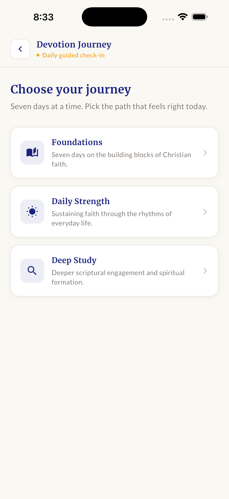
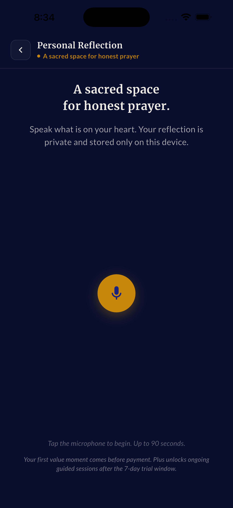
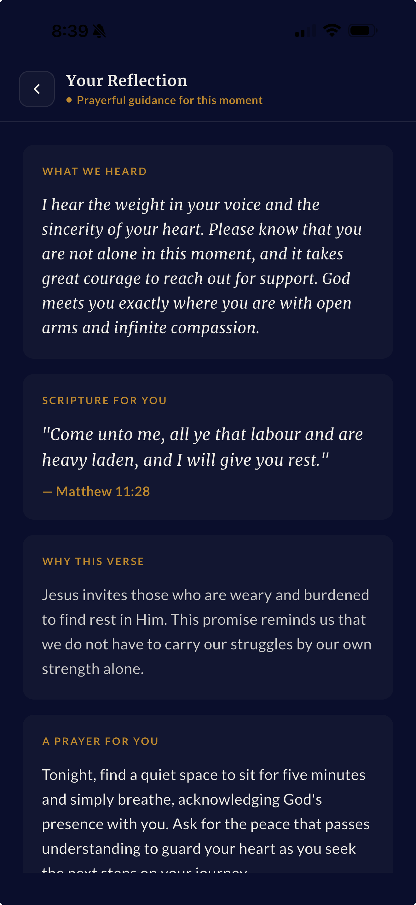
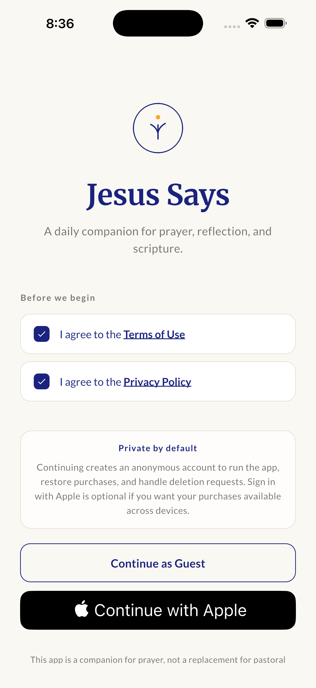
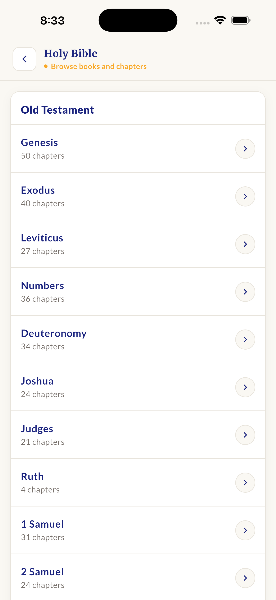
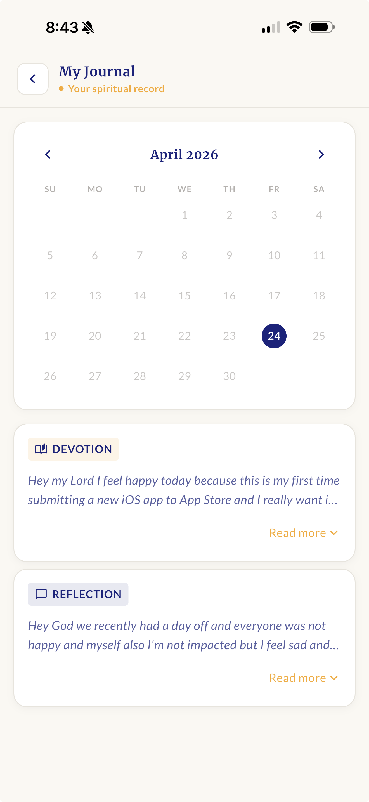
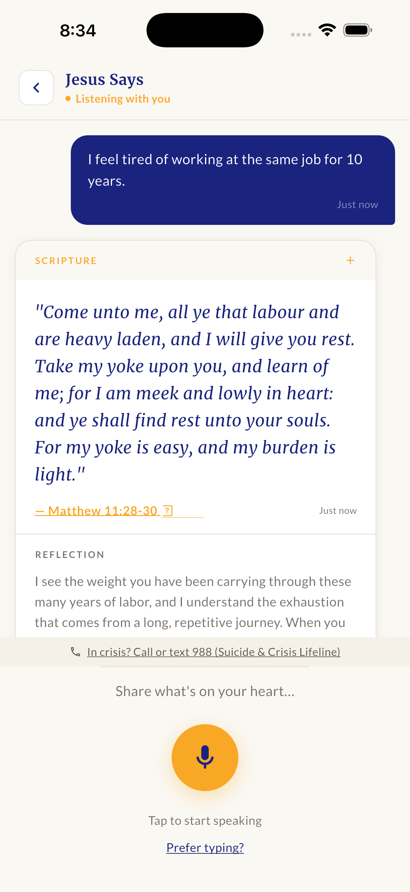

— 01
Talk to Jesus, by voice.
Speak what's on your heart for up to 90 seconds. Receive a Scripture-anchored response written for the moment you're in.
A daily companion for prayer, reflection, and scripture. Receive the verse for your exact moment. Talk to Jesus by voice. Build a quiet rhythm — one day at a time.

“Come unto me, all ye that labour and are heavy laden, and I will give you rest.”
Matthew 11:28
Speak what's on your heart for up to 90 seconds. Receive a Scripture-anchored response written for the moment you're in.
Anxious, grieving, hopeful, restless. Tell us where you are — get the verse that meets you there.
Private journaling for confession, gratitude, and the small honest things. Never leaves your device.
Foundations · Daily Strength · Deep Study. Seven days at a time, paced for the season you're in.
Old and New Testament, KJV, with a clean reader and a helpful "where do I start?" tap.
A morning verse, a mid-day check-in, an evening reflection. Five quiet minutes, not a guilt loop.
Anonymous account out of the box. Sign in with Apple is optional, only if you want purchases across devices.
Pick today's reading from a journey paced for you — Foundations, Daily Strength, or Deep Study.

Open Personal Reflection, tap the mic, and pray out loud — anywhere, even on a walk.

Close the day with a Scripture chosen for what you said, plus a short reflection to carry into sleep.





Yes — the core experience is free, including the Bible, daily devotional, and your first voice reflection. A 7-day free trial unlocks unlimited reflections, full devotion journeys, and journal history. Cancel anytime.
Yes. Voice reflections are processed and immediately discarded — only the text response and your written notes persist, and only on your device by default. You can delete everything from Settings → Data.
No. Jesus Says is a companion for prayer and Scripture in the in-between moments — not a substitute for community, communion, or pastoral care. It's a doorway back into Scripture, not a destination.
We currently use the King James Version (KJV) for the in-app reader. Additional translations are coming.
iPhone first. Android is on the roadmap — drop your email below and we'll let you know when it's ready.
Through the App Store: Settings → your name → Subscriptions → Jesus Says. Apple handles billing — we never see your card.
Download Jesus Says today. Free on iPhone. No ads, no tracking, no shame loops — just Scripture and the small daily practice that builds a year.
Download on theApp Store iPhone · iOS 16+ · Free with optional 7-day trial